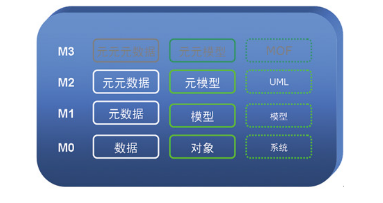

建模复习——从入门到放弃
17 网络与信息安全 雷杨
1 . CPS系统 (Cyber-Physical Systems)
参考资料：
- introduction.ppt （p1~p33）
- 信息物理融合系统
1.1 CPS系统概述
Cyber（信息技术）: 计算，通信，控制（3C技术,computation,communication, control )，并且离散，逻辑，交换的系统；
Physical（物理系统）： 自然的和人造的系统受物理定律的支配，并持续运行；
Cyber-Physical Systems（信息物理融合系统）: 网络和物理系统紧密结合在一起的系统。
1.2 CPS系统的特点
- 信息-物理的耦合由新的需求和应用驱动
网络工作在多个和极端的规模下，每个物理组件中的网络性能，大规模的有线和无线网络
- 系统的系统
- 新的时空约束
多个时间和空间尺度上的复杂性，动态重组/重新配置，非传统的计算和物理基板
- 通信/计算/控制 之间的新型交互
自动化程度高，控制回路必须在所有尺度上关闭，控制回路中有大量非技术型的精明用户
- 无处不在的安全和隐私需求，操作必须可靠
Notice：不是桌面计算；不是传统的，事后嵌入式/实时系统；不是今天的传感器网络。其研究目标是物理和网络（计算，通信，控制）设计深度集成。
1.3 CPS系统的应用领域
- 防御系统
- 远程物理操作（如：远程医疗，远程操控）
2. 模型驱动开发 ( MDD,Model-Driven Development )
参考资料
- introduction.ppt （p34~p47）
- MDSF：模型驱动开发（MDD）介绍
- 元模型
2.1 模型
是指某个系统的简化/抽象表示，从给定的角度突出显示感兴趣的属性。这个观点定义了模型的关注和范围。图2.1-1：系统层次图
2.2 MDA定义的三种模型
- 计算独立模型（CIM，Computation-Independent Model）
描述系统的需求和将在其中使用系统的业务上下文。此模型通常描述系统将用于做什么，而不描述如何实现系统。CIM 通常用业务语言或领域特定语言来表示。
- 平台独立模型（PIM，Platform-Independent Model）
描述如何构造系统，而不涉及到用于实现模型的技术。此模型不描述用于为特定平台构建解决方案的机制。PIM 在由特定平台实现时可能是适当的，或者可能适合于多种平台上的实现。
- 平台特定模型 （PSM，Platform-Specific Model）
从特定平台的角度描述解决方案。其中包括如何实现 CIM 和如何在特定平台上完成该实现的细节。
2.3 模型驱动层次结构

图2.3-1：模型驱动开发途径

图2.3-2：模型驱动层次结构（1）

图2.3-3：模型驱动层次结构（2）
3 . 安全悠关系统与实时系统（Safety-Critcal Systems and Real-Time Systems）
参考资料：
- safety-critical system.ppt（p1~p36）
- 死锁和死锁处理
3.1 实时系统（Real-Time Systems）的定义
系统的正确性不仅取决于计算的逻辑结果，还取决于产生结果的时间。
3.2 设计过程（The Design Process）
- 建模（Modeling）：建模是通过模型获得对系统更深层次的理解的过程。 模型模拟系统并反映系统的属性。 模型指定了系统的功能。
- 设计（Design）：设计是工件的结构化创造过程，它指定了系统如何执行它的功能。
- 分析（Analysis）：分析是通过“解剖”获得对系统更深入理解的过程。它规定了一个系统为什么会这么做（或者不能做一个模型所要做的事情）
3.3 术语和概念
实时系统（Real-Time System）：
在计算和操作上具有性能最后期限的系统。 实时系统常常被忽略。意味着计算系统存在于一个更大的系统内部，目的是帮助系统实现其整体职责。
事件驱动系统（Event-Driven System）：
其行为主要是对外部事件的特定反应来驱动而不是自发产生的。
时间驱动系统驱动（Time-Driven Systems）:
其行为主要由时间推移或时间的到来驱动。
以上为对外部设备的几种响应方式。

图3.3-1：事件驱动与时间驱动
3.4 一些定义（Definitions）
- 时间约束（Timing constraint）：对执行时间行为的约束（包括硬实时和软实时）
- 发布时间（Release Time）：作业变成为可执行的时间。如果所有的工作在系统开始执行时被释放，那么就认为没有释放时间
- 截止时间（Deadline）：工作被要求执行完成的时间。如果截止时间是无限的，那么工作就没有最后期限。绝对截止时间等于发布时间加上相对截止时间
- 响应时间（Response time）：作业从发布到执行完成的时间长度
3.5 实时系统的描述
- 及时性（timeless）
- 并发性（concurrency）
- 可预测性（predictability）
- 正确性和鲁棒性（correctness and robustness）
及时性：
行为的及时性与时间约束有关，如截止时间。最后期限可能很硬或很软。时效性的重要建模问题是建模执行时间，截止时间，到达模式，同步模式和时间源。
并发性：
多个操作顺序链的同时执行。围绕并发系统执行的问题与此有关：
a.并发线程的调度特性
b.即将到来的事件的到来模式
c.线程必须同步时使用的集合点模式
d.控制对共享资源访问的方法
正确性和鲁棒性：
正确性表明一个系统总是运行正确。鲁棒性表明系统即使在遇到新的情况（不在计划中）下也是可靠的。因此必须警惕死锁，竞争以及其他异常情况
死锁，竞争，与异常情况
死锁产生的条件：
- 系统资源不足
- 任务推进不合理
- 资源分配不当等
死锁的四个必要条件：
- 互斥。任务要求对共享资源进行独占控制，即一个资源每次只能被一个进程使用
- 占有且等待。任务在等待其他资源被放弃的同时保持资源，即一个进程因请求资源而阻塞时，对已获得的资源保持不放
- 不可剥夺性。任务已获得的资源，在未使用完之前，不能强行剥夺
- 循环等待。若干进程之间形成一种头尾相接的循环等待资源关系
处理死锁的基本方法：
- 死锁预防：破坏死锁的必要条件
- 死锁避免：允许前三个必要条件，但采取措施避免形成循环等待（如，银行家算法）
- 死锁检查和死锁解除：系统检查是否存在死锁，若存在，则通过撤销部分进程等方法回收资源，解除死锁
否定条件4的方法：
- 信号量机制（如，哲学家进餐问题）
- 使用定时会合（timed rendezvous）
4 . 实时系统任务调度（Real-time workload）
本小结重点内容是实时调度算法，主要包括RM算法（静态优先级）和EDF算法（动态优先级）
参考资料：
- 2.safety-critical system.ppt （p47~p106）
- 优先级反转和优先级继承
4.1 术语和概念
实时工作量
- 工作（Job，工作单位）：计算，文件读取，消息传输等
- 属性（Attributes）：推进需要的资源，时间参数
实时任务
任务：从读取输入数据和内部状态开始，结束生成结果并更新内部状态。
在调用点没有内部状态的任务称为无状态任务，否则称为有状态任务。
对于周期任务（p，e），任务周期性的重复。（注意任务的描述符号表示，调度算法部分会用到）
- 周期 p = inter - release time；p>0
- 执行时间 e = maximum execution time (0 < e < p)
- 利用率 U = e/p
截止时间：硬截止时间 VS 软截止时间
硬截止时间：如果错过了最后期限，可能会造成灾难性的或非常严重的后果
因此验证是至关重要的：即使在最坏的情况下，系统运行是否能够满足所有的截止时间
确定性保证
软截止时间：理想情况下，截止时间应该达到最高性能。 在最后期限未到的情况下，性能会下降。
属于尽最大努力保证实时服务一类
可调度性：
表示实时系统（一组实时任务）是否能够按期完成的属性
4.2 RM（单调速率，Rate Monotonic）调度算法
4.2.1 调度算法描述
- 最佳的静态优先级调度
- 根据周期分配优先权
- 周期较短的任务具有较高的优先级
- 以最短的时间执行一项工作
注：
（1）RM的最优性可以描述为：如果一个任务集能够被静态调度, 那么RM调度算法就能够调度这个任务集。其最最优性可以证明，证明方法类似于动态规划中的“剪贴法”。（2）RM调度算法属于“可抢占”式调度一类（事实上，后面的EDF也是这一类）。
4.2.2 调度过程
响应时间：任务从释放时间到结束时间

图4.2.2-1：RM调度过程示意图（dealine miss）

图4.2.2-2：RM调度过程示意图（response）
4.2.3 RM调度模型的前提假设
- 所有的任务是相互独立的（例如，它们不相互作用，不相互依赖）
- 所有任务都是周期的，且运行时间不变
- 没有任何任务因等待外部事件而阻塞。
- 所有任务共享一个共同的释放时间（临界时刻，critical instant）
- 所有的任务的截止时间等于它们的周期，即任务必须在下一个作业释放之前完成。
4.2.4 RM调度模型使用限制
如果一个实时系统能够使用RM调度模型，那么有：

如，对于周期任务 T1(4,1)，T2(5,1)，T3(10,1)，有：

因此，以上三个任务是能够被RM模型调度的。
4.3 EDF（最早截止时间优先，Earliest Deadline First）调度算法
4.3.1 调度算法描述
- 最佳的动态优先级调度
- 具有较早截止时间的任务具有较高的优先级
- 以最早的截止时间执行任务
4.3.2 调度过程

图4.2.2-1：EDF调度过程示意图
4.3.3 EDF调度模型使用限制
如果一个实时系统可以使用EDF算法进行调度，则有： ∑Ui ≤ 1
4.4 实时操作系统
4.4.1 实时操作系统简介
PRET-C，Nucleus Real Time Operating System (RTOS)；
注：详见 2.safety-critical system.ppt （p85~p95）
4.4.2 实时操作系统特点
实时操作系统内核的实时性能定量指标包括
- 任务上下文切换时间 ：中断延迟，响应，恢复时间，任务响应时间
- 最大中断禁止时间：反映内核对外界停止中断响应的最长时间
- 任务上下文切换时间：系统中最频繁发生的动作，影响整个系统性能
包括：保存当前任务上下文、选择新任务，及恢复新任务上下文三个阶段
提高内核实时性的方法：任务互斥、同步
- 资源有限等待：任务没能获得需要的资源会被阻塞。如果资源不是任务继续运行必备的，任务可选择有限等待该资源
- 优先级反转问题解决：抢占式任务调度中的资源竞争，采用优先级继承协议消除
多任务内核应允许动态改变任务的优先级以避免发生优先级反转现象。
为防止发生优先级反转,内核能自动变换任务的优先级,这叫做优先级继承(Priority inheritance)。详见 优先级反转和优先级继承
5 . UML建模（Modeling with UML）
参考资料：
- UML基础: 统一建模语言简介
- 五分钟读懂UML类图
- UML实践详细经典教程
- 活动图实例：细谈UML建模语言中的活动图模型
- UML建模之活动图介绍
- UML学习（三）-----序列图
- UML 2.0 时间图
- 4.modeling with UML（requirement）.ppt
5.1 用例图（Use case diagrams），类图（Class diagrams），
序列图（Sequence diagrams）和状态图（State diagrams）
- 用例图：描述用户所看到的系统的功能行为，用例图从用户的角度来表示系统的功能（静态视图）
- 类图：描述系统的静态结构（对象，属性，联系），类图表示系统的结构
- 序列图：描述系统对象之间的动态行为，序列图将系统的行为表示为不同对象之间的消息交互
- 状态图：描述单个对象的动态行为，用有趣的动态行为来表示单个对象的行为
5.2 行为建模
从逻辑上讲，可以将单个元素或元素组的行为建模为三种不同类型：（详见 4.modeling with UML.ppt p72~p82）
- 简单行为
- 状态行为
- 持续行为
其他非功能性限制也经常适用。这种约束被称为QOS约束，完成这一行为的质量。
例如：一个动作需要多长时间？两位数的准确度足够了吗？QOS约束通常使用约束语言进行建模（OCL）。
UML的主要特征是支持有限状态机。状态图的两个基本概念是状态和转换。
5.3 状态图（state chart）
状态的特点：
可以在状态图上捕获行为的对象被认为是被动的。
这样一个对象的行为空间被分解为存在的不相交和不相交的条件，称为状态。
转换是对导致状态改变的事件的响应。该对象可以在接收到事件（尽管不进行转换）或者进行转换时执行动作，进入或退出状态。
UML中定义了四种事件：
- SignalEvent：与信号相关的事件。
Signal是一个异步通信的规范，所以SignalEvent是一个与异步接收信号相关的事件。
- CallEvent：与调用相关联的事件。
Call是一个同步通信的规范，所以CallEvent允许一个对象直接调用其中一个方法来影响另一个对象的状态。
- TimeEvent：与时间流逝相关的事件，通常用tm（<duration>）或after（<duration>）表示。
几乎所有的TimeEvents都是相对的时间。也就是说，它们指定事件将在对象处于指定状态至少<duration>时间单位后发生。如果对象在超时之前离开该状态，则与该持续时间关联的逻辑计时器将消失，而不会创建超时事件
- ChangeEvent：与属性的值更改关联的事件。
它很少用在软件应用程序中。然而，当一个状态属性被内存映射到一个硬件上时，它可以用来指示内存地址改变的值
转换（transition）
转换是从起始状态开始并在目标状态结束的弧。
转换通常具有命名的事件触发器，可选地随后是执行转换时执行的动作（即可执行语句或操作）。
过渡事件签名的格式为：
event-name '(' parameter-list ')' '[' guard-expression ']' '/' action-list
注：事件可以指定形式参数列表，这意味着事件可以携带实际的参数。
digit(key: keyType)/ show(key)
约束（Guard）和行为执行顺序（Execution Order）：
guard表达式是一个布尔表达式，包含在方括号中，必须计算为true或false。
行动的执行顺序很重要，基本规则是退出->转换->进入（exit-transition-entry）。
也就是说，先行状态的退出动作首先执行，然后是转换动作，随后是后续状态的进入动作。
注：Guard的原意为“保卫，守卫”，根据实际意义暂译为“约束”，不一定准确。
5.4 状态机（state chart）
伪状态（Pseudostates）符号表示，历史伪状态（History）：详见 4.modeling with UML.ppt p91~p98
5.5 活动图（Activity Diagrams）
UML 1.x中的活动图在语义上等同于状态图，并共享一个通用的元模型。在UML 2.0中，活动图给出了独立于状态图的语义基础。 在UML 2.0中，有多个级别的活动图：基本的，中间的，完整的等等。详见 4.modeling with UML.ppt p99~p104
活动图元素：1、活动状态图（Activity） 2、动作状态（Actions)3、动作状态约束（Action Constraints） 4、动作流（Control Flow）5、开始节点（Initial Node） 6、终止节点（Final Node）7、对象（Objects） 8、数据存储对象（DataStore）9、对象流（Object Flows） 10、分支与合并（Decision and Merge Nodes）11、分叉与汇合（Fork and Join Nodes） 12、异常处理（Exception Handler）13、活动中断区域（Interruptible Activity Region） 14、泳道（Partition）
UML中有三种主要的图形式来描述交互场景 ：
- 交互图（communication diagrams）
- 序列图（sequence diagrams）
- 时序图（timing diagrams）
5.6 序列图（Sequence Diagrams）
序列图：详见 参考资料 UML学习（三）-----序列图序列图局部顺序的确定 ，如作业exercise中的第二题。序列图中的循环
5.7 时间图（Timing Diagrams）
时间图： 详见参考资料 UML 2.0 时间图值生命线（Value lifeline）和状态生命线( State lifeline)
5.8 时间自动机（Timed automata）
时间自动机是实时系统建模与验证的理论。 具有相同目的的其他形式的例子还有时间Petri网（timed Petri Nets），
时间过程代数（timed process algebras）和实时逻辑（real time logics）
公平地说，以时间自动机作为输入语言的核心开发的几种模型检查器是理论应用和发展的动力。
时间自动机本质上是一个用实值变量（时间系统）进行扩展的有限自动机（包含一组有限节点和一组有限带有标记的边的图）
- 变量（variables）对系统中的逻辑时钟进行建模，在系统启动时用零初始化，然后以相同的速率同步增加
- 时钟约束（clock constraints），即边上用于限制自动机行为的约束（Guard）
- 当时钟值满足在边上标记约束（Guard）时，边表示的转换（transition）就可以发生。 当进行转换时，时钟可能被重置为零。

图5.8-1：时间自动机示例图
时间自动机语法：Review.ppt p96
时间自动机工具UPPAAL
- 同步通信（synchronous）通过使用输入输出行为的握手同步（hand-shake synchronization）来实现
- 异步通信（asynchronous）使用共享变量（shared variables）来实现
为了对握手同步进行建模，字母 ∑ 定义为包括：输入动作 a？，输出动作a！，内部行为 ‘T’
时间自动机示例：铁路交叉口控制系统的建模与验证：Review.ppt p101~p103
5.9 UML 预定义包（UML profile）
一个UML预定义包是一个扩充具有补充信息的UML模型的工具。 这种机制可以以两种方式使用：
- 用以扩展UML语言。
例如，UML没有提供明确的信号量概念，但可以通过重载现有的UML概念（如Class）来添加它。
结果是一种特殊的类，它除了标准的类语义之外，还包含信号量语义。
- 可用于将附加信息附加到辅助用途（如模型分析或代码生成）所需的模型。
例如，可以使用这种注释来指定类的某些操作的最差情况执行时间，这可能需要用于分析应用程序的时序特性。
TimedObservation是TimedInstantObservation和TimedDurationObservation的抽象超类。
TimedInstantObservation表示与事件发生（eocc属性）相关联并且在给定时钟上观察到的时刻。
UML预定义包的优点：
- 语言基础设施的再利用（工具，规格）
- 需要较少的语言设计技能
- 允许扩展构造型采用新（图形）符号
- 配置文件可以定义模型视点
缺点：受UML元模型的约束
注：至今未找到关于UML profile 的准确翻译，参考了一下网上的几种说法，感觉“预定义包”的说法相对较为准确。
5 . 设计阶段（Design Phase）
参考资料：4.modeling with UML（design）.ppt
- 架构设计（Architectural design）详细介绍了最大的软件结构，如子系统，软件包和任务
- 机械设计（Mechanistic design）包括共同努力实现共同目标的类
- 详细设计（Detailed design）指定了各个类内部的原始数据结构和算法
表格中详细描述了三个类别：

图5-1：三个层次的设计类别
Notice:
- 对于简单的系统，大部分的设计工作可能会花在机械和细节层面。
- 对于包括航空电子设备和其他分布式实时系统在内的大型系统而言，架构级别设计对项目成功至关重要。
- 4.modeling with UML（design）.ppt 中主要讲的是架构层次的设计
6 . 后记
本文主要整理自复习课上的ppt（Review.ppt），由于本人水平一般，能力有限，文中不当乃至谬误之处恐在所难免，尤其是部分内容的翻译，以及最后MARTE建模与设计模式部分，实在参不透那几张ppt上的意思（唯一能做的，就是双手合十，祈祷不会考，如果有会的大佬，望不吝赐教），为避免出现误导，所以索性略过。仅以此文抛砖引玉。行文至此，自然是致谢。
- 感谢陈博老师几个月来的辛勤授课，并在最后一节课组织了答疑，尽管我什么也没听到（被堵在人群之外，根本就
没能凑过去）。
- 感谢崔宇鑫同学提供复习课全程录音，路转粉，给小姐姐打call，祝好人一生平安。
最后，一首腾格尔的《隐形的翅膀》送给大家，祝大家节日快乐，考试顺利！
雷杨
2017年11月11日